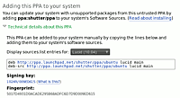
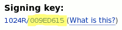

PPA
Dieser Artikel wurde für die folgenden Ubuntu-Versionen getestet:
Dieser Artikel ist größtenteils für alle Ubuntu-Versionen gültig.
Hinweis!
Zusätzliche Fremdquellen können das System gefährden.
Zum Verständnis dieses Artikels sind folgende Seiten hilfreich:
Ein Terminal bedienen, optional
Einen Editor bedienen, optional
deb-Pakete installieren (plattformabhängig)
Launchpad bietet Entwicklern bzw. Paketbetreuern den Service "Personal Package Archive" (kurz PPA) an. Diese können Debian-Quellpakete in ein PPA hochladen. Launchpad baut daraus automatisiert Binär-Pakete für verschiedene Architekturen und Ubuntu-Versionen. Damit entfällt für reine Benutzer das Kompilieren aus dem Quellcode, was Einsteiger häufig überfordert und erleichtert die Installation von Programmen, die nicht oder nur in einer älteren Version in den offiziellen Paketquellen enthalten sind.
In diesem Artikel wird das Hinzufügen eines PPA als Paketquelle für das eigene System beschrieben. Dabei sollte immer bedacht werden, dass ein PPA grundsätzlich eine Fremdquelle ist und die Systemstabilität gefährden kann. Ohne einen triftigen Grund sollten stets die offiziellen Paketquellen vorgezogen werden. Vor dem Hinzufügen sollte daher die (englischsprachige) Launchpad-Seite zum jeweiligen PPA kontrolliert werden, um zu überprüfen, wozu das PPA dient und wie es betreut wird:
|  |
| Technische Details eines PPAs |
Welche Ubuntu-Versionen werden unterstützt?
Handelt es sich um stabile oder Test-Versionen?
Wird zusätzliche Software angeboten?
Ist das PPA gut gepflegt oder veraltet?
Gibt es ungelöste Fehlerberichte, die mich auch betreffen könnten?
Werden Sicherheitsaktualisierungen eingepflegt? (beim Ersatz für offiziell verfügbare Pakete)
Vorgängerversionen sind i.d.R. nach Aktualisierungen im PPA nicht mehr verfügbar.
Ein PPA kann auch weitere PPAs als Abhängigkeit haben. Dies kann allerdings (noch) nicht von der Paketverwaltung aufgelöst werden und kann nur auf der PPA-Seite in Erfahrung gebracht werden. Alle Informationen, die im Folgenden erläutert werden, finden sich auch auf der jeweiligen PPA-Seite, insbesondere unter den "Technical details about this PPA".
PPA hinzufügen¶
Das Hinzufügen einer Paketquelle verlangt Root-Rechte [1]. Nach dem Hinzufügen müssen die Paketquellen neu eingelesen werden, damit die neuen Pakete gefunden werden. Um Programme aus einem PPA zu installieren, muss es, wie andere Paketquellen auch, in der Paketverwaltung freigeschaltet werden [2]. Bei einem PPA ist dies jedoch recht komfortabel.
Ubuntu / Unity¶
bis Ubuntu 15.10¶
Als erstes öffnet man zum Beispiel über die Dash (das Ubuntu-Startmenü) das Ubuntu Software-Center. Dort findet man unter "Bearbeiten" den Menüpunkt "Software-Paketquellen...", den man auswählt.
ab Ubuntu 16.04¶
Im Systemmenü wählt man denden Eintrag "Systemeinstellungen -> System -> Anwendungen und Aktualisierungen"
In dem neu geöffneten Fenster mit dem Titel "Anwendungen & Aktualisierungen" geht man auf den Tab "Andere Programme". Mit einem weiteren Klick auf "Hinzufügen" wird man nun nach der "APT-Zeile" gefragt. Diese setzt sich folgendermaßen zusammen:
ppa:Launchpad-Nutzername/PPA-Name
Launchpad-Nutzername muss dabei durch den PPA-Besitzer ersetzt werden. Für PPA-Name wird der tatsächliche Name des PPA verwendet. Der Besitzer kann auch ein "Launchpad-Team" sein. Der Name des PPA (Standard: ppa) wird vom Besitzer festgelegt, so kann es beispielsweise ein stable- und ein testing-PPA für ein Projekt geben.
Alternativ öffnet man die "Software-Quellen" mit dem Befehl:
gksudo software-properties-gtk
KDE¶
Für KDE-Benutzer lautet der Befehl zum Aufrufen eines grafischen Verwaltungswerkzeugs:
kdesudo software-properties-kde
Die Abfrage nach dem Administrator-Passwort erfolgt automatisch.
Kommandozeile¶
Ab Ubuntu 9.10 bietet das in der Standard-Installation enthaltene Paket python-software-properties diese Funktion auch für die Kommandozeile (unter Ubuntu 14.04 heißt das entsprechende Paket software-properties-common). Der allgemeine Aufruf lautet [3]:
sudo add-apt-repository ppa:LP-BENUTZER/PPA-NAME
Ab Ubuntu 10.10 wird damit automatisch eine neue Datei im Ordner /etc/apt/sources.list.d/ erstellt. Die nächsten Schritte sind bei Verwendung der Kommandozeile immer die gleichen:
sudo apt-get update sudo apt-get install PAKETNAME
Selbstverständlich lassen sich diese beiden Schritte auch innerhalb des Software-Center oder mit der bevorzugten Paketverwaltung ausführen.
Beispiele¶
Konkrete Beispiele findet man in vielen Wiki-Artikeln, wie:
ppa:shutter/ppa für das PPA der Shutter-Entwickler
ppa:freetuxtv/freetuxtv für FreetuxTV
und in vielen weiteren Artikeln, die den Textbaustein PPA verwenden.
Ein Beispiel, so wie man es des öfteren in Wiki-Artikeln findet:
Adresszeile zum Hinzufügen des PPAs:
ppa:shutter/ppa
Hinweis!
Zusätzliche Fremdquellen können das System gefährden.
Ein PPA unterstützt nicht zwangsläufig alle Ubuntu-Versionen. Weitere Informationen sind der  PPA-Beschreibung des Eigentümers/Teams shutter zu entnehmen.
PPA-Beschreibung des Eigentümers/Teams shutter zu entnehmen.
Damit Pakete aus dem PPA genutzt werden können, müssen die Paketquellen neu eingelesen werden.
Hinweis:
Es kann durchaus sinnvoll sein, sich die im Hinweiskasten verlinkte PPA-Beschreibung anzusehen, da Entwickler diese gerne für Informationen nutzen.
Manuell¶
Dies entspricht folgendem Vorgehen, das für alle Ubuntu-Versionen gilt:
In die Datei sources.list oder in eine eigene Datei im Verzeichnis /etc/apt/sources.list.d/ wird die APT-Zeile eingetragen, wobei der LP-BENUTZER, der PPA-NAME und der Codename für die Ubuntu-Version (hier: trusty) ersetzt werden müssen.[4]
deb http://ppa.launchpad.net/LP-BENUTZER/PPA-NAME/ubuntu trusty main # deb-src http://ppa.launchpad.net/LP-BENUTZER/PPA-NAME/ubuntu trusty main
Entfernt man die Raute am Anfang der zweiten Zeile, fügt man das Archiv mit den Quellpaketen hinzu. Dies ist aber nur für diejenigen wichtig, die ein Programm selbst aus dem Quelltext übersetzen möchten.
Die APT-Zeilen können auch unter den "Technical details about this PPA" der Launchpad-Seite auf die jeweilige Ubuntu-Version angepasst angezeigt werden.
|  |
| Die Schlüssel-ID |
Um die Quelle zu verwenden, sollte man den Signatur-Schlüssel einspielen. Die Schlüssel-ID kann man ebenfalls auf der Launchpad-Seite des PPA unter den "Technical details about this PPA" nachlesen. Diese setzt man in dem folgenden Befehl[3] für ID ein:
sudo apt-key adv --recv-keys --keyserver keyserver.ubuntu.com ID
Nach dem Auffrischen der Paketinformationen können nun Pakete aus dem PPA installiert werden.
PPA entfernen¶
Analog zum obigen Befehl kann ein PPA mit der Option -r auch wieder entfernt werden:
sudo add-apt-repository -r ppa:LP-BENUTZER/PPA-NAME sudo apt-get update
Es wird aber nur das PPA entfernt, nicht das oder die von dort installierte/n Paket/e, bzw, auch nicht die automatisch hinzugefügten Signatur-Schlüssel. Zum Deinstallieren von Paketen nutzt man eine beliebige Paketverwaltung oder das im nächsten Abschnitt beschriebene Programm ppa-purge.
PPA Purge¶
Mit dem Programm ppa-purge ist es möglich, ein PPA zu deaktivieren und die in dem PPA enthaltene Software wieder auf die Version zu bringen, die von den offiziellen Paketquellen bereitgestellt wird. Das Programm kann direkt aus den Paketquellen installiert [4] werden:
ppa-purge (universe)
 mit apturl
mit apturl
Paketliste zum Kopieren:
sudo apt-get install ppa-purge
sudo aptitude install ppa-purge
Man deaktiviert ein PPA mit ppa-purge, so wie man es mit add-apt-repository hinzufügt hat:
sudo ppa-purge ppa:LP-BENUTZER/PPA-NAME
Mit diesem Befehl wird nur das PPA deaktiviert, die Einträge in den Paketquellen bleiben kommentiert erhalten. Kommt es zu Problemen mit dem Signierungsschlüssel von wieder eingebundenen PPAs, kann eine Problembehebung unter Paketverwaltung/Problembehebung nachgelesen werden.
Pakete, die in den offiziellen Paketquellen nicht vorhanden sind, werden auch nicht entfernt. Die Pakete aus einem deaktivierten PPA müssen bei Bedarf über eine beliebige Paketverwaltung deinstalliert werden.
Experten-Info:
ppa-purge übergibt den Reinstallationsbefehl an apt-get oder aptitude. Greift ppa-purge aufgrund der Einstellung oder als Rückfalllösung auf aptitude mit der Standardeinstellung "Aptitude::Delete-Unused" zu, werden nicht mehr benötigte Pakete - nach Rückfrage - zusätzlich entfernt. Es ist also genau darauf zu achten, was entfernt werden soll, um ggfs. vorher abzubrechen (das PPA ist zu dem Zeitpunkt schon deaktiviert).
Ein weiteres Problem können laufende Programminstanzen darstellen, die bei der grafischen Anmeldung automatisch gestartet werden und im Hintergrund laufen. Die Paketverwaltung kümmert sich zwar um die Einträge für die Paketquellen und die Installation neuerer oder älterer Paketversionen, bereits laufende Programme werden aber nicht beendet und neu gestartet. Ausnahme: Dienste können automatisch angehalten und wieder gestartet werden.
Wer auf Nummer sicher gehen will, beendet vorher die grafische Sitzung und nutzt ppa-purge auf der Konsole. Mehr zu den Optionen erfährt man bei Benutzung der Option -h:
ppa-purge -h
Links¶
Intern¶
Launchpad/PPA - Ein eigenes PPA betreiben
Textbaustein PPA - Vorlage zur Verwendung in Wiki-Artikeln
Y PPA Manager - Werkzeuge zum Umgang mit PPAs
Paketverwaltung
 Übersichtsartikel
Übersichtsartikel

- Erstellt mit Inyoka
-
 2004 – 2017 ubuntuusers.de • Einige Rechte vorbehalten
2004 – 2017 ubuntuusers.de • Einige Rechte vorbehalten
Lizenz • Kontakt • Datenschutz • Impressum • Serverstatus -
Serverhousing gespendet von